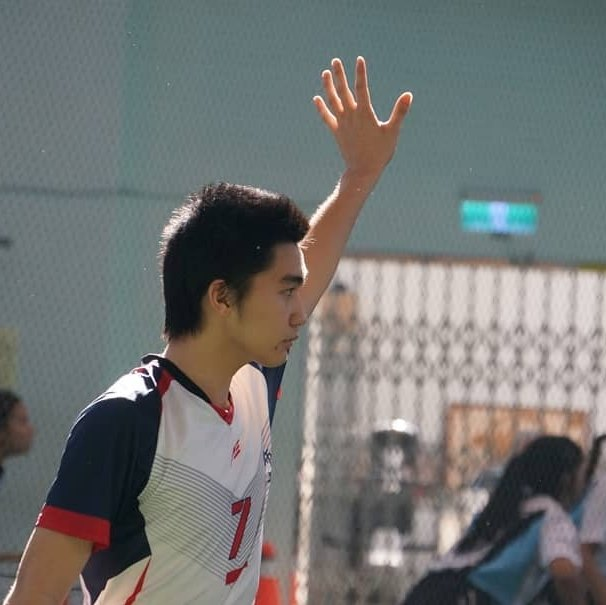

今天的我，也一定要超越昨天的自己

基本資料
- 姓名：藍中崑
- 性別：男
- 年齡：19歲
- 身高：181公分
- 體重：75公斤
- 星座：摩羯座
簡介
國立台北教育大學數位科技設計學系二年級，喜歡寫程式、打排球，高中開始打排球校隊，現在也在國北教數位系男排和男乙排裡面打球，沒什麼天分，但肯努力。個性一板一眼，一旦決定了就會做到最後。對各領域都盡量保持熱情與好奇的態度，可以在有興趣的領域沒日沒夜廢寢忘食的鑽研。
學歷
- 民生國小
- 民族國小美術班
- 介壽國中
- 國立台灣師範大學附屬高級中學
- 國立台北教育大學數位科技設計學系
&&資訊科學系雙主修

興趣
- 打排球
- 寫程式
- 運動
- 玩電玩
- 彈鋼琴
- 看動漫
- 其他
高中開始打校隊，一路打到現在。跟強者競爭的快感令人無法自拔。
比賽中就算是遇到強手也緊咬對手不放，那種永不放棄的拚勁也能應用到其他領域。
因為爸爸也是資工系教授的關係，從小就對寫程式有興趣。一點一點修正錯誤的過程，
直到最後能順利執行的那種喜悅不是其他東西能輕易比擬的。
從小就很喜歡運動打過各種校隊桌球隊、羽球隊、巧固球隊、合球隊、排球隊、
嘗試各種不同運動，有助於身體的協調性和體能。協調性和體能一提升要嘗試什麼運動都能游刃有餘。
遊戲可以讓我暫時忘卻現實，在遊戲裡常常試著找遊戲的Bug，
在玩遊戲時也常試著想想看遊戲背後的程式碼，未來也希望能自己製作遊戲。
國小時開始學鋼琴，原本不喜歡，但到國中慢慢開始有興趣，
雖然已經沒有再繼續上課了，但是自己還是會找新曲子練習。偶爾有機會露兩手給朋友看，自娛娛人。
喜歡看日本動漫，海賊王、死神、JOJO、、咒術迴戰、石紀元.......
數也數不清，果然最喜歡的還是排球少年🏐。
其他很多領域也挺有興趣的，對新接觸的事物都不排斥，還會去找領域間的共同之處，
縫紉、烹飪、書法、繪畫、小說、扯鈴、滑板、棋藝......等等都不討厭，也都稍有涉略。